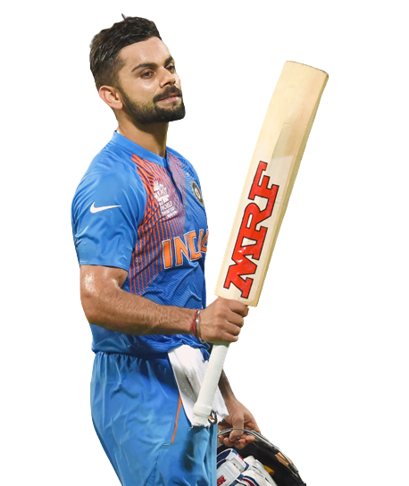

Virat Kohli born 5 November 1988 is an Indian international cricketer and the former captain of the Indian national cricket team. Widely regarded as one of the greatest batsmen in the history of the sport,[4] he plays for Royal Challengers Bangalore in the IPL and Delhi in domestic cricket. Kohli holds numerous records in his career which includes scoring most runs in T20 internationals and IPL, fastest to reach 10,000 ODI runs. In 2020, the International Cricket Council named him the male cricketer of the decade. Kohli has also contributed to India's successes, including winning the 2011 World Cup and the 2013 Champions trophy. He is among the only four Indian cricketers who has played 500 matches for India.Born and raised in New Delhi, Kohli trained at the West Delhi Cricket Academy and started his youth career with the Delhi Under-15 team.He made his international debut in 2008 and quickly became a key player in the ODI team and later made his Test debut in 2011.In 2013, Kohli reached the number one spot in the ICC rankings for ODI batsmen for the first time. During 2014 T20 World Cup, he set a record for the most runs scored in the tournament. In 2018, he achieved yet another milestone, becoming the world's top-ranked Test batsman, making him the only Indian cricketer to hold the number one spot in all three formats of the game. His form continued in 2019, when he became the first player to score 20,000 international runs in a single decade.
